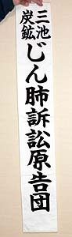

<!DOCTYPE HTML PUBLIC "-//W3C//DTD HTML 4.01 Transitional//EN">
<HTML>
<HEAD>
<META http-equiv="Content-Type" content="text/html>
<META http-equiv="Content-Style-Type" content="text/css" media="all">
<TITLE>みいけ展示室</TITLE>
</HEAD>
<BODY>
<BLOCKQUOTE>
<TABLE>
  <TBODY>
    <TR>
      <TD width="516">
      <P class="MsoNormal" style="text-indent:71.65pt;mso-char-indent-count:4.92"><B style="mso-bidi-font-weight:normal"><FONT color="red" size="+1">展示品</FONT><SPAN lang="EN-US" style="font-size:16.0pt;
mso-font-width:90%"></SPAN></B><BR>
      </P>
      <TABLE>
        <TBODY>
          <TR>
            <TD width="91"></TD>
            <TD width="404">　<B>三池炭鉱じん肺訴訟原告団タスキ</B>
            </TD>
          </TR>
        </TBODY>
      </TABLE>
      <p class=MsoNormal style='text-indent:11.0pt;mso-char-indent-count:1.0;
line-height:17.0pt;mso-line-height-rule:exactly'><FONT face="MS UI Gothic">資料提供者は積さん。三井三池じん肺訴訟二陣原告団の副団長を務められた。タスキの長さ86センチ、幅13センチ。<br><spanlang=EN-US style='font-size:11.0pt'>
　1998年1月29日、三池炭鉱の第二陣として、じん肺になった元炭鉱労働者と遺族が三井鉱山・三井石炭鉱業・三井建設の3社に対し集団提訴。<br>
　じん肺は現役で発症する人よりも、退職した後病気が進行するケースが多く、現代医学でもってしても完治せず、苦しみながら亡くなることが多い恐ろしい病。<br>
　三井建設は2001年に和解に応じ、2002年8月1日には福岡の西鉄グランドホテルにおいて、三井両社との間で「三井鉱山関連じん肺問題」終結共同宣言が行われ和解が成立した。<br>
　しかし、その1ヵ月後の9月4日、第二陣訴訟原告団の遠藤団長は亡くなられた。<br>
　「北松、筑豊、北海道、三池一陣等の先輩たちが苦労してじん肺裁判勝利への道筋をつけて下さったおかげで、約4年半の短期間で勝利和解ができた。その4年半ではありますが、このタスキにはその間の汗が染み付いております。特に筑豊の人たちからの支援が大きかった」と積さんは語る。<br>
　なお、三池じん肺訴訟の一陣提訴は1993年。その第一陣原告団のタスキの色は赤色。「三池じん肺訴訟原告団」と記されていた。<br>
　現在、大牟田市にある米の山病院では年2回じん肺・アスベスト肺の検診相談会が開催されている。
</span><P>

</FONT></p>
      </TD>
    </TR>
  </TBODY>
</TABLE>
</BLOCKQUOTE>

</BODY>
</HTML>
